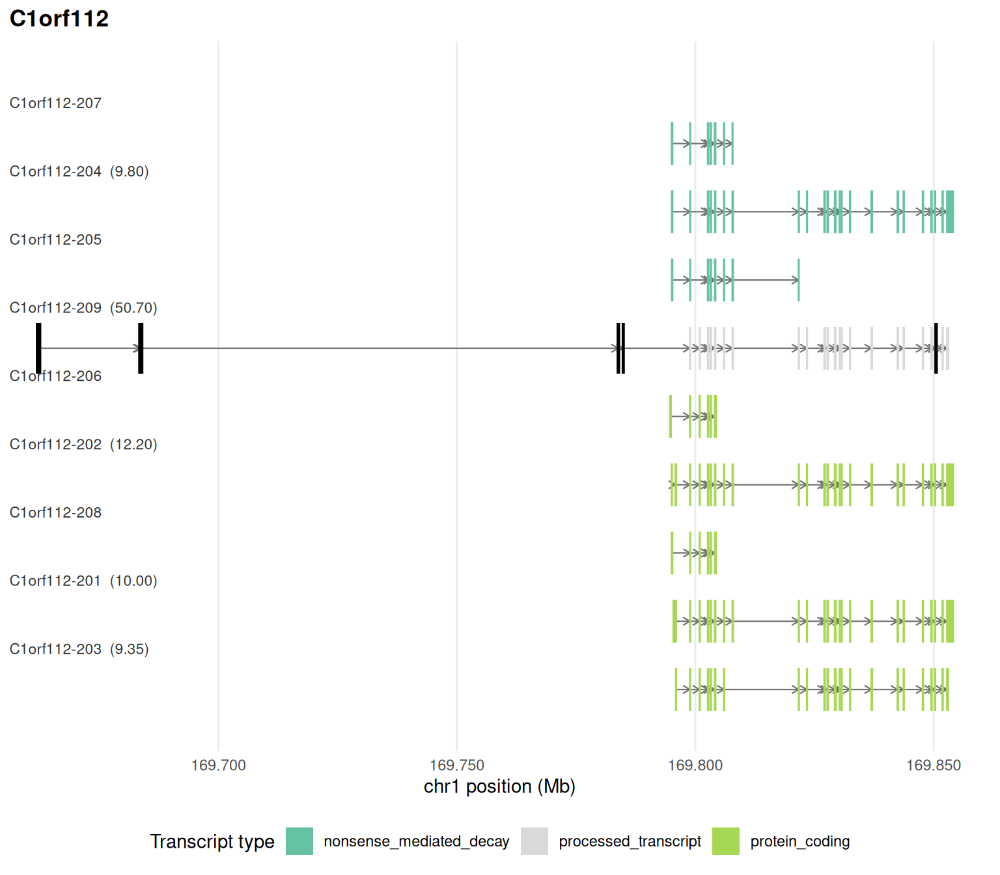

library(isoformic)
library(dplyr)
extdata <- fs::path_package("isoformic", "extdata")
annot_dir <- prepare_isoformic_annotation(download_reference(version = "33", file_type = "gff"))
iso <- IsoformicExperiment(
experiment_name = "preeclampsia_placenta",
annot_path = annot_dir,
assays = list(abundance = read_parquet(fs::path(extdata, "pe_abundance.parquet"))),
col_data = read_parquet(fs::path(extdata, "pe_col_data.parquet"))
)
de_tx(iso) <- read_parquet(fs::path(extdata, "pe_det.parquet"))
de_gene(iso) <- read_parquet(fs::path(extdata, "pe_deg.parquet"))Isoform structure and productivity
October 17, 2026
Source:vignettes/articles/isoformic-productivity.qmd
Not every isoform of a coding gene makes the protein. Retained introns, poison exons and shifted stop codons produce transcripts that are degraded by nonsense-mediated decay (NMD) or translated into a different protein. This article derives the open reading frame (ORF) of every isoform, classifies each one as productive or not, quantifies the productive share of each gene’s expression, tests its change between conditions and brings in external evidence of translation and decay.
It starts from the object built in the introduction:
Structural features from the annotation
Beyond the biotype label, transcript_features() derives from the exon and CDS coordinates the ORF and UTR lengths, the distance from the stop codon to the last exon junction (the 50-nt rule of NMD), the promoter and 3’-end groups of each gene, the canonical isoform (MANE Select or Ensembl canonical) and the splicing events of every isoform relative to it:
feats <- transcript_features(iso, gene_name = "RBPJ")
feats[, c("transcript_name", "orf_length", "utr3_length", "stop_to_last_junction", "nmd_predicted", "tss_group", "n_skipped_exons", "n_retained_introns")]
#> # A tibble: 10 × 8
#> transcript_name orf_length utr3_length stop_to_last_junction nmd_predicted
#> <chr> <int> <dbl> <dbl> <lgl>
#> 1 RBPJ-222 283 0 -131 FALSE
#> 2 RBPJ-201 1503 4121 -316 FALSE
#> 3 RBPJ-206 1503 0 -316 FALSE
#> 4 RBPJ-225 NA NA NA FALSE
#> 5 RBPJ-204 1464 59 -316 FALSE
#> 6 RBPJ-205 1461 4121 -316 FALSE
#> 7 RBPJ-214 1398 176 -316 FALSE
#> 8 RBPJ-208 1149 357 -108 FALSE
#> 9 RBPJ-202 1461 4124 -316 FALSE
#> 10 RBPJ-210 NA NA NA FALSE
#> # ℹ 3 more variables: tss_group <int>, n_skipped_exons <int>,
#> # n_retained_introns <int>Productivity calls
transcript_productivity() turns those features into a graded call, each with its reason:
-
productive: complete ORF identical to the canonical one; -
altered_productive: complete ORF, no NMD, but a different protein; -
unproductive: no ORF, NMD predicted or an unproductive biotype; -
noncoding; -
uncertain: not enough information (for example an incomplete CDS annotation).
productive_fraction() is the share of a gene’s expression carried by productive isoforms, per condition, with its change. A gene whose total expression is flat while its productive fraction falls is regulated post-transcriptionally.
prod <- transcript_productivity(iso)
#> Warning: ! 91 transcripts have a sequence length differing from the exon length; their
#> ORFs are skipped.
table(prod$productivity)
#>
#> productive altered_productive unproductive noncoding
#> 18292 14271 24301 10123
#> uncertain
#> 5398
pf <- productive_fraction(iso, group = "condition")
head(pf)
#> # A tibble: 6 × 7
#> gene_id gene_name mean_gene_expr productive_fraction productive_fraction_…¹
#> <chr> <chr> <dbl> <dbl> <dbl>
#> 1 ENSG00000… SEC16B 9.63 0.561 0.963
#> 2 ENSG00000… RGPD6 741. 0.820 0.458
#> 3 ENSG00000… ACP7 16.2 0.337 0.677
#> 4 ENSG00000… RRM2 106. 0.766 0.439
#> 5 ENSG00000… AHNAK2 19.0 0.560 0.875
#> 6 ENSG00000… RPL18 3565. 0.658 0.970
#> # ℹ abbreviated name: ¹productive_fraction_preeclampsia
#> # ℹ 2 more variables: productive_fraction_control <dbl>,
#> # delta_productive_fraction <dbl>Sequence-aware ORFs
The annotation only describes the CDS it was given, and novel transcripts have none. extract_transcript_sequences() adds the spliced sequence of every transcript to an annotation directory, from a genome FASTA (which also covers novel transcripts of long-read or assembly annotations) or, as here, from the matching GENCODE transcript FASTA (the bundled example_isoformic() annotation already carries them).
With sequences, transcript_orfs() projects the canonical start codon of each gene onto every isoform and translates it, so the ORF, its stop codon, upstream ORFs, the frame relative to the canonical protein and the NMD class are computed rather than read from the annotation, and transcript_productivity() reports source = "sequence":
fasta_file <- download_reference(version = "33", file_type = "fasta")
#> ℹ '/home/runner/.cache/R/isoformic/gencode.v33.transcripts.fa.gz' already
#> exists.
extract_transcript_sequences(annot_dir, transcript_fasta = fasta_file)
#> ℹ '/home/runner/.cache/R/isoformic/gencode_v33_chr_patch_hapl_scaff_annotation_gff3/annot_data_sequences.parquet'
#> already exists; use `overwrite = TRUE` to replace it.
has_sequences(iso)
#> [1] TRUE
orfs <- transcript_orfs(iso, gene_name = "RBPJ")
orfs[, c("transcript_name", "orf_source", "orf_length", "stop_codon", "nmd_class", "n_uorf", "frame_vs_canonical", "coding_probability")]
#> # A tibble: 10 × 8
#> transcript_name orf_source orf_length stop_codon nmd_class n_uorf
#> <chr> <chr> <dbl> <chr> <chr> <int>
#> 1 RBPJ-222 annotation_partial 283 <NA> <NA> 6
#> 2 RBPJ-201 annotation 1503 TAA none 2
#> 3 RBPJ-206 annotation 1503 TAA none 0
#> 4 RBPJ-225 projected 1140 TGA none 0
#> 5 RBPJ-204 annotation 1464 TAA none 0
#> 6 RBPJ-205 annotation 1461 TAA none 5
#> 7 RBPJ-214 annotation 1398 TAA none 0
#> 8 RBPJ-208 annotation 1149 TGA none 4
#> 9 RBPJ-202 annotation 1461 TAA none 4
#> 10 RBPJ-210 longest 462 TAA none 4
#> # ℹ 2 more variables: frame_vs_canonical <chr>, coding_probability <dbl>
prod <- transcript_productivity(iso, gene_name = "RBPJ")
prod[, c("transcript_name", "productivity", "reason", "source")]
#> # A tibble: 10 × 4
#> transcript_name productivity reason source
#> <chr> <fct> <chr> <chr>
#> 1 RBPJ-222 uncertain incomplete 3' end, no stop codon r… seque…
#> 2 RBPJ-201 productive complete ORF identical to the cano… seque…
#> 3 RBPJ-206 productive complete ORF identical to the cano… seque…
#> 4 RBPJ-225 unproductive unproductive biotype annot…
#> 5 RBPJ-204 altered_productive alternative start codon seque…
#> 6 RBPJ-205 altered_productive alternative start codon seque…
#> 7 RBPJ-214 altered_productive alternative start codon seque…
#> 8 RBPJ-208 altered_productive alternative start codon seque…
#> 9 RBPJ-202 altered_productive alternative start codon seque…
#> 10 RBPJ-210 unproductive unproductive biotype annot…orf_source records where the ORF came from: annotation (the annotated CDS, re-read from the sequence), projected (the canonical start codon projected onto the isoform), annotation_partial (a CDS flagged incomplete), longest (the longest ORF, when nothing could be projected) or none. coding_probability comes from a Fickett + hexamer logistic model trained on GENCODE coding and lncRNA transcripts; it decides whether a longest ORF is believable.
benchmark_productivity() measures the rules against the annotation biotypes: how many nonsense_mediated_decay and retained_intron transcripts the sequence rules alone call unproductive, and how many coding and canonical transcripts they call productive:
benchmark_productivity(iso)$summary
#> # A tibble: 5 × 4
#> metric n value source
#> <chr> <int> <dbl> <chr>
#> 1 nmd_biotype_called_unproductive 5088 0.994 sequence
#> 2 retained_intron_called_unproductive 13074 0.569 sequence
#> 3 protein_coding_called_productive 38376 0.848 sequence
#> 4 canonical_called_productive 15242 0.963 sequence
#> 5 lncrna_called_noncoding 7343 1 sequenceFractions, tests and uncertainty
productivity_fractions() splits each gene’s expression over the classes and, for unproductive isoforms, over the mechanism (NMD, retained intron, no ORF, non-stop decay).
test_productive_fraction() tests the change in productive fraction between two groups with a quasi-binomial model per gene. It runs on the counts assay when the object has one; this object only carries TPM, so the test is run on abundances here.
head(productivity_fractions(iso, group = "condition"))
#> # A tibble: 6 × 7
#> gene_id gene_name productivity fraction fraction_preeclampsia fraction_control
#> <chr> <chr> <fct> <dbl> <dbl> <dbl>
#> 1 ENSG00… TSPAN6 productive 1 1 1
#> 2 ENSG00… TNMD productive 1 1 1
#> 3 ENSG00… DPM1 altered_pro… 0.915 0.930 0.908
#> 4 ENSG00… DPM1 other 0.0394 0.0388 0.0396
#> 5 ENSG00… DPM1 uncertain 0.0460 0.0316 0.0528
#> 6 ENSG00… SCYL3 productive 0.720 0.614 0.770
#> # ℹ 1 more variable: delta_fraction <dbl>
head(test_productive_fraction(iso, group = "condition", assay = "abundance"))
#> # A tibble: 6 × 13
#> gene_id gene_name mean_gene_expr productive_fraction_…¹ productive_fraction_…²
#> <chr> <chr> <dbl> <dbl> <dbl>
#> 1 ENSG00… RPL35A 1749. 0.389 0.853
#> 2 ENSG00… UQCRB 856. 0.589 0.215
#> 3 ENSG00… RPL36A 1448. 0.985 0.929
#> 4 ENSG00… SKP1 3755. 0.548 0.641
#> 5 ENSG00… H3-3A 1555. 0.820 0.691
#> 6 ENSG00… SNX6 1302. 0.880 0.975
#> # ℹ abbreviated names: ¹productive_fraction_preeclampsia,
#> # ²productive_fraction_control
#> # ℹ 8 more variables: delta_productive_fraction <dbl>, log_odds_ratio <dbl>,
#> # se <dbl>, statistic <dbl>, dispersion <dbl>, df <dbl>, pvalue <dbl>,
#> # padj <dbl>productive_fraction() also accepts an expression floor (min_expr), Salmon inferential replicates (inf_reps, or metadata(iso)$inf_reps) for the uncertainty of each fraction, and a healthy-tissue reference from GTEx (below).
Poison exons and enrichment
Genes ranked by the change in productive fraction can be tested for enrichment directly, which targets regulated unproductive splicing such as AS-NMD. Exons found only in unproductive isoforms (poison exons) are listed by poison_exons() and outlined in the genomic context plot:
genesets <- read_gmt(fs::path(extdata, "c2.cp.reactome.v2023.1.Hs.symbols.gmt.txt"))
set.seed(42)
prod_enrichment <- run_productivity_enrichment(iso, genesets, group = "condition")
head(prod_enrichment[order(prod_enrichment$padj), c("pathway", "NES", "padj")])
#> # A tibble: 6 × 3
#> pathway NES padj
#> <chr> <dbl> <dbl>
#> 1 REACTOME_OLFACTORY_SIGNALING_PATHWAY 1.99 2.29e-4
#> 2 REACTOME_INWARDLY_RECTIFYING_K_CHANNELS 1.91 5.55e-4
#> 3 REACTOME_AMINE_LIGAND_BINDING_RECEPTORS 1.81 1.08e-2
#> 4 REACTOME_CHEMOKINE_RECEPTORS_BIND_CHEMOKINES -1.71 1.50e-2
#> 5 REACTOME_PLATELET_HOMEOSTASIS -1.63 1.20e-1
#> 6 REACTOME_FACTORS_INVOLVED_IN_MEGAKARYOCYTE_DEVELOPMENT_AND_PLAT… -1.52 1.33e-1
poison <- poison_exons(iso)
head(poison)
#> # A tibble: 6 × 9
#> gene_id gene_name seqid start_pos end_pos strand n_unproductive transcript_ids
#> <chr> <chr> <chr> <int> <int> <chr> <int> <chr>
#> 1 ENSG00… C1orf112 chr1 169662007 1.70e8 + 1 ENST000004982…
#> 2 ENSG00… C1orf112 chr1 169683469 1.70e8 + 1 ENST000004982…
#> 3 ENSG00… C1orf112 chr1 169683756 1.70e8 + 1 ENST000004982…
#> 4 ENSG00… C1orf112 chr1 169783811 1.70e8 + 1 ENST000004982…
#> 5 ENSG00… C1orf112 chr1 169784877 1.70e8 + 1 ENST000004982…
#> 6 ENSG00… C1orf112 chr1 169850454 1.70e8 + 1 ENST000004982…
#> # ℹ 1 more variable: exon_length <int>
plot_genomic_context(iso, gene_name = unique(poison$gene_name)[1])
External evidence from frozen datasets
Observed translation and decay beat rules. The package pins versioned evidence tables (frozen_datasets()) that are downloaded once from the first mirror that has them, or rebuilt from their sources (data-raw/README.md in the repository documents the procedure), and joined into the annotation; transcript_productivity() then reports source = "evidence" for the transcripts they cover:
frozen_datasets()[, c("name", "version")]
#> # A tibble: 6 × 2
#> name version
#> <chr> <chr>
#> 1 appris e113v49
#> 2 appris_domains e113v49
#> 3 riboseq_orfs phase1_phase2
#> 4 nmd_exons karousis2021
#> 5 polyasite 2.0_GRCh38.96
#> 6 gtex_transcript_tpm v8
add_appris(iso) # APPRIS principal isoforms and method scores
add_riboseq_orfs(iso) # GENCODE Ribo-seq ORFs: translated main ORFs and uORFs
add_nmd_exons(iso) # NMD-inducing exons validated by NMD inhibition
transcript_productivity(iso, gene_name = "RBPJ")[, c("transcript_name", "productivity", "reason", "source")]
# Pfam domains retained, partial or lost relative to the canonical isoform
domain_retention(iso, gene_name = "RBPJ")
# Healthy-tissue baseline: productive fraction and dominant isoform in GTEx
ref <- gtex_reference(iso, tissue = "Whole Blood")
productive_fraction(iso, group = "condition", reference = ref)The evidence columns are consulted in a fixed order: a productivity_evidence column overrides everything, then a validated NMD exon, then a translated main ORF, then APPRIS principal status. Any other per-transcript evidence is attached with add_annotation_columns().
To reproduce an analysis with one deposit of the frozen files, pin the mirror before calling the add_*() functions (see ?isoformic-options):
options(isoformic.frozen_mirrors = "https://zenodo.org/records/<record>/files/")Session information
sessionInfo()
#> R version 4.6.2 (2026-10-29)
#> Platform: x86_64-pc-linux-gnu
#> Running under: Ubuntu 26.04.1 LTS
#>
#> Matrix products: default
#> BLAS: /usr/lib/x86_64-linux-gnu/openblas-pthread/libblas.so.3
#> LAPACK: /usr/lib/x86_64-linux-gnu/openblas-pthread/libopenblasp-r0.3.32.so; LAPACK version 3.12.0
#>
#> locale:
#> [1] LC_CTYPE=C.UTF-8 LC_NUMERIC=C LC_TIME=C.UTF-8
#> [4] LC_COLLATE=C.UTF-8 LC_MONETARY=C.UTF-8 LC_MESSAGES=C.UTF-8
#> [7] LC_PAPER=C.UTF-8 LC_NAME=C LC_ADDRESS=C
#> [10] LC_TELEPHONE=C LC_MEASUREMENT=C.UTF-8 LC_IDENTIFICATION=C
#>
#> time zone: UTC
#> tzcode source: system (glibc)
#>
#> attached base packages:
#> [1] stats graphics grDevices utils datasets methods base
#>
#> other attached packages:
#> [1] dplyr_1.2.1 isoformic_0.1.2.9022
#>
#> loaded via a namespace (and not attached):
#> [1] Matrix_1.7-6 gtable_0.3.6 jsonlite_2.0.0
#> [4] compiler_4.6.2 tidyselect_1.2.1 Rcpp_1.1.2
#> [7] parallel_4.6.2 scales_1.4.0 BiocParallel_1.46.0
#> [10] yaml_2.3.12 fastmap_1.2.0 lattice_0.23-1
#> [13] ggplot2_4.0.3 R6_2.6.1 labeling_0.4.3
#> [16] generics_0.1.4 curl_8.1.0 knitr_1.52
#> [19] tibble_3.3.1 DBI_1.3.0 RColorBrewer_1.1-3
#> [22] pillar_1.11.1 rlang_1.3.0 fastmatch_1.1-8
#> [25] utf8_1.2.6 xfun_0.62 fs_2.1.0
#> [28] S7_0.2.2 otel_0.3.0 cli_3.6.6
#> [31] withr_3.0.3 magrittr_2.0.5 grid_4.6.2
#> [34] digest_0.6.39 fgsea_1.38.0 cowplot_1.2.0
#> [37] lifecycle_1.0.5 vctrs_0.7.3 data.table_1.18.6.1
#> [40] evaluate_1.0.5 glue_1.8.1 farver_2.1.2
#> [43] duckdb_2.0.0 codetools_0.2-20 rmarkdown_2.32
#> [46] tools_4.6.2 pkgconfig_2.0.3 htmltools_0.5.9